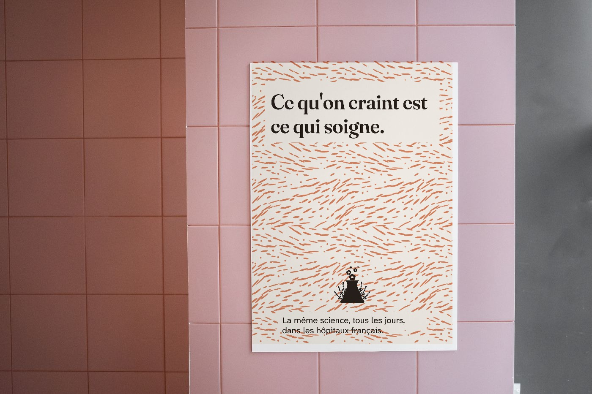
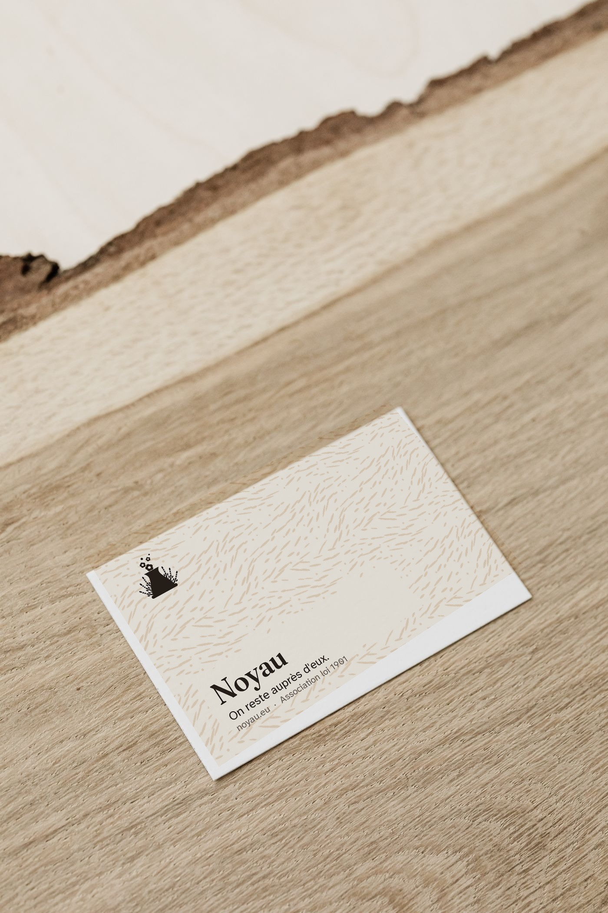
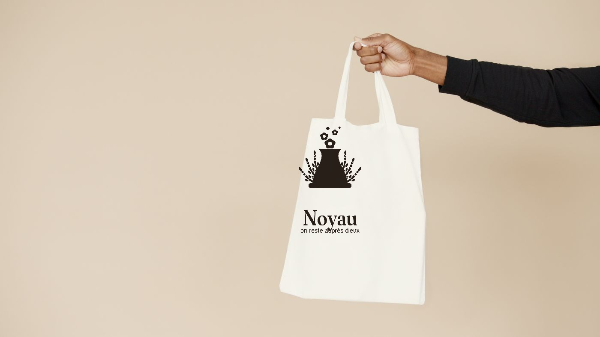
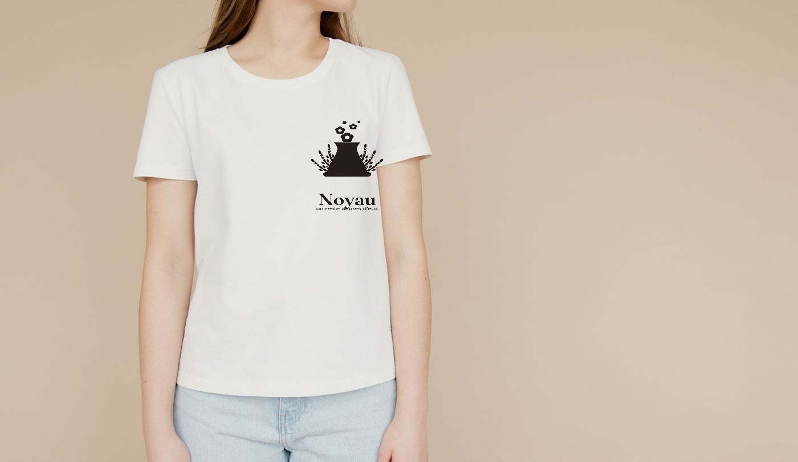

Applications · six
Percentages, so one template works at any size.
A layout given in millimetres breaks the moment the format changes. Given as a percentage stack, the same template holds from a postcard to a festival banner.
The stacks
6% margin
12% logo
8%
26% headline
4%
14% body
22% margin
8% action
VERTICAL — poster, flyer
6 · 12 · 8 · 26 · 4 · 14 · 22 · 8
6 · 12 · 8 · 26 · 4 · 14 · 22 · 8
5%
46% image
5%
20% headline
3%
10% body
5%
6% logo
IMAGE & TEXT — social, explainer
5 · 46 · 5 · 20 · 3 · 10 · 5 · 6
5 · 46 · 5 · 20 · 3 · 10 · 5 · 6
10% logo
10%
34% statement
38% grain field
8% url
BANNER — festival, signage
10 · 10 · 34 · 38 · 8
10 · 10 · 34 · 38 · 8
8%
14% logo
30% grain
22% name + line
8%
12% contact
6%
CARD — business, ward card
8 · 14 · 30 · 22 · 8 · 12 · 6
8 · 14 · 30 · 22 · 8 · 12 · 6
58% image, full bleed
4%
18% headline
3%
11% body
6% logo
IMAGE-LED — web hero
58 · 4 · 18 · 3 · 11 · 6
58 · 4 · 18 · 3 · 11 · 6
10%
44% quote
26% grain field
10% logo
10%
SQUARE — social quote
10 · 44 · 26 · 10 · 10
10 · 44 · 26 · 10 · 10
Why the margin percentages look generous. Mass-market was set at 25/100 and the ward
legibility floor demands generous type — together those mean fewer words, larger, with more
air. A stack that fills 90% of the page with content is the wrong brand.
Rules that apply to every stack
The action block is the only Apricot on the page. It appears once. If a layout needs two calls to action, it needs to be two layouts.
The grain field is where Le Grain lives — a band with nothing on it. Content never sits directly on the pattern; it sits on a solid plate.
Never the placard rhythm. A full-bleed colour block plus declarative headline plus button, repeated down a page, is the compositional signature of protest material. It is what the anti-nuclear sites do, and inheriting it makes this brand their mirror image.
| Stock | Uncoated. Paper is the substrate, not an ink — print on a warm white uncoated sheet rather than laying down a background. |
| Colour | Two-colour (Ink + one) wherever budget allows. The identity was built so one-colour works. |
| Finish | None. No lamination, no spot UV, no foil. Gloss reads corporate — the register the brief forbids. |
| Ward material | 14 pt body minimum. Matte only — glare is a real problem for someone reading in bed. |
Digital
| Base size | 18px, including mobile. Do not reduce on small screens. |
| Interactive | Terracotta with Paper text. Never Apricot with light text — 2.44:1, fails. |
| Favicon | The reduced mark. noyau-mark-small.svg at 16 and 32px. |
| Font loading | display=swap. For an audience possibly on poor connections in a hospital, invisible text is worse than briefly unstyled text. |
| Motion | Minimal. If the mark moves, it moves as one object. Nothing bounces. |
Applied




These are review artifacts at roughly 1400px, and their photography is placeholder. Anything printed uses the vector files.